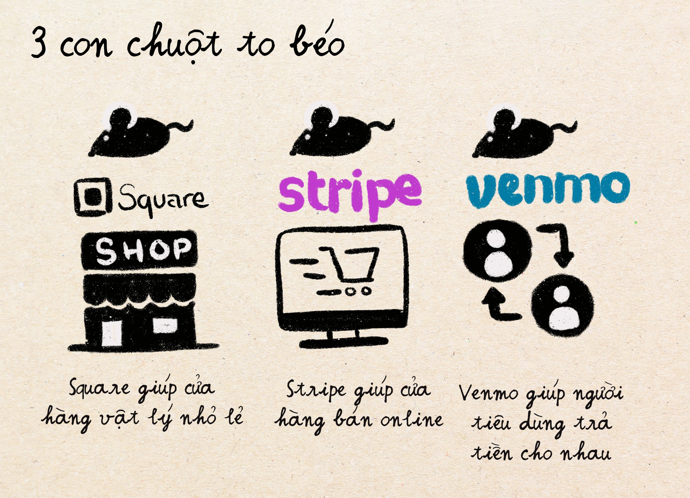
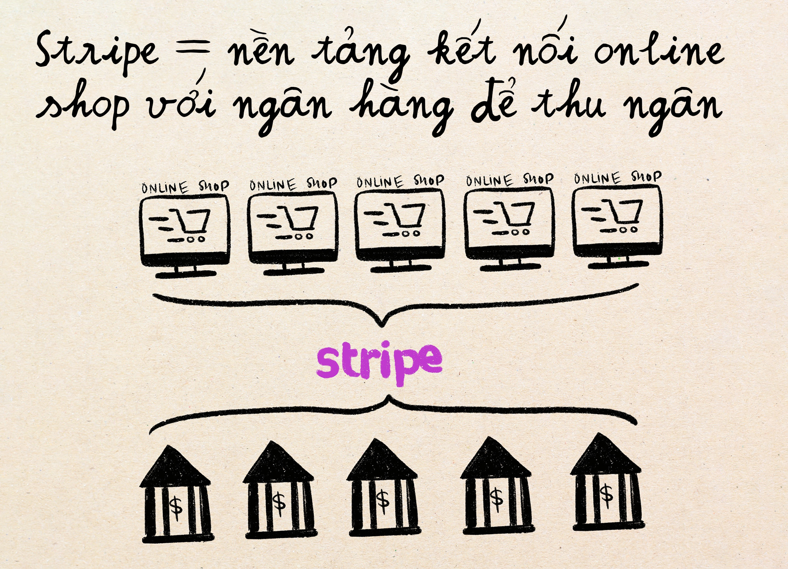
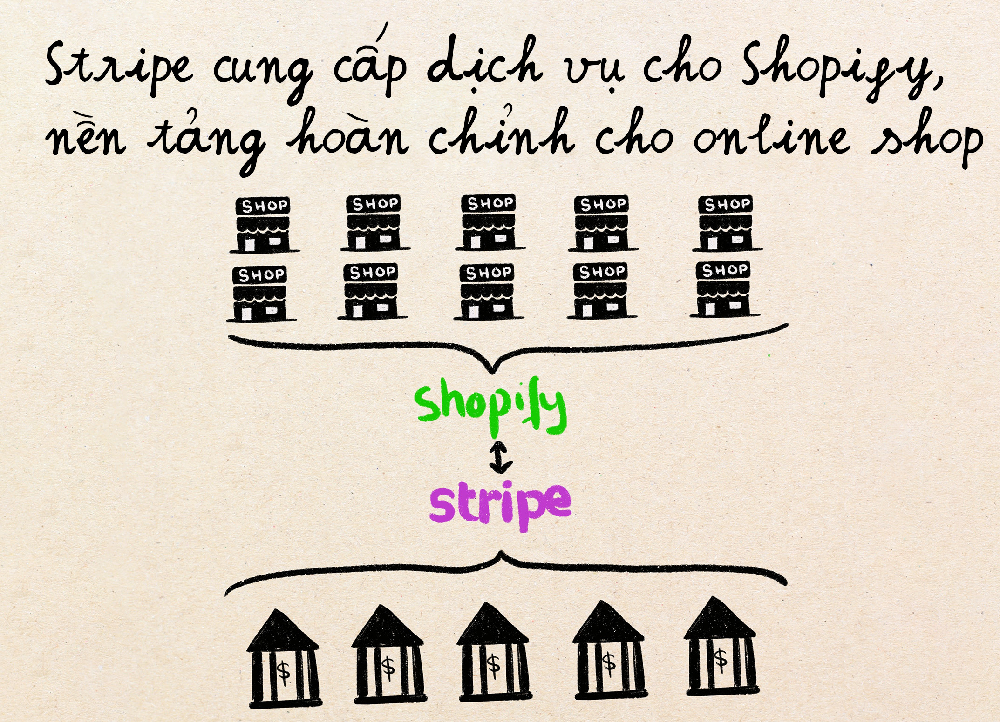
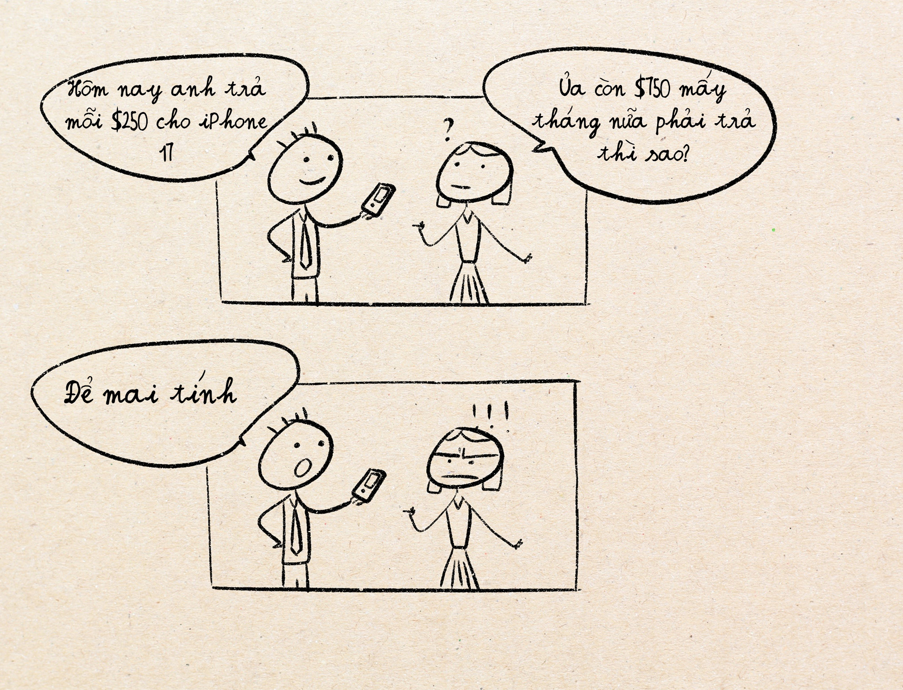
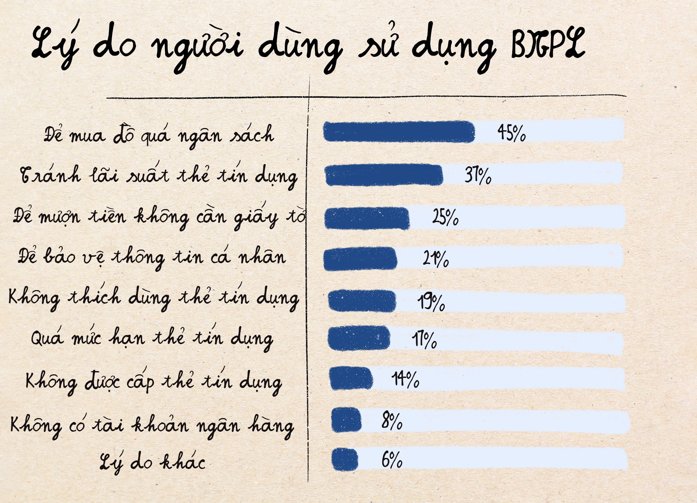

Phân tích ngành thanh toán mà không bị "nổ não"
Tưởng tượng bạn đi cà phê với nhỏ bạn thân hồi năm 2010, nó đưa tờ 200k trả quán, nhưng mà bạn lục túi hoài không ra tờ 100k trả cho nó. Không có tiền mặt (phương án tối ưu) thì lúc đó làm gì?
- Phương án 2: viết séc ngân hàng. Trông trang trọng chẳng khác gì giấy đăng ký kết hôn. Nhưng có ai khùng lại mang theo sổ séc ngân hàng?
- Phương án 3: chuyển khoản ngân hàng. Nhỏ bạn phải đợi vài ngày tiền mới tới.
- Phương án 4: Nợ hôm tới trả. Cái này mệt nhất, phải nhớ chớ không nó đòi thì cũng ngại lắm.
Nhảy đến năm 2025. Tình huống y như vậy nhưng giờ bạn chỉ cần dùng app điện thoại như Momo, ZaloPay là vèo cái tiền trả xong ngay, trước khi bạn kịp húp miếng cà phê nữa. Đây, là sự đột phá và phát triển của ngành thanh toán. Thời điểm hiện tại nghe nó vẻ đơn giản và thậm chí là chán, nhưng để đến được hôm nay, có rất nhiều phát minh thú vị đã được đưa ra trên thị trường.
Trong bài viết ngày hôm nay, mình sẽ mổ xẻ ngành thanh toán và giải thích cách phân tích các thể loại thanh toán khác nhau, bằng những câu chuyện dễ hiểu nhé.
Ai là người hưởng lợi nhiều nhất khi khách hàng thanh toán online?
Bé Leo nhà mình rất thích đọc một cuốn truyện tên là "The Highway Rat" dịch tiếng việt là con chuột cống trên đường cao tốc. Và mình nghĩ câu chuyện này minh hoạ quá trình tiền đi từ người mua tới người bán khá vui. Câu chuyện tóm lại nó thế này: một con chuột cống luôn chặn các người đi qua lại đường cao tốc và đòi đồ ăn của họ, và trong khi người đi đường thì gầy guộc, chuột ta thì mập ú.
Trong việc thanh toán, bạn cứ tưởng tượng khi tiền được chuyển đi trên con đường "cao tốc" này, có nhiều con chuột đứng bên đường đòi một phần thì nó mới cho tiền đi tiếp. Tổng cộng thông thường tiền cúng cho mấy con chuột này lên tới khoảng 1-4% tổng tiền chuyển. Những con chuột này bao gồm 4 thể loại:
- Ngân hàng phát hành thẻ cho người tiêu dùng – đây là con chuột béo nhất. Cứ mỗi 100k tiền "cúng" nó nhận được khoảng 75 tới 90k.
- Ngân hàng thu tiền cho người bán – béo nhì, lấy khoảng 5-10k tiền cúng
- Công ty xử lý thanh toán – đây là các công ty tạo ra các công nghệ giúp thanh toán dễ hơn như công cụ quẹt thẻ, hoặc các giao diện thanh toán online, v.v. thì lấy khoảng 2-7k trong số tiền cúng 100k đó.
- Còn số tiền bé tẹo còn lại, khoảng 1k thì do mạng lưới thẻ vận hành đường cao tốc mà tiền nó đi lại lấy. Đây là các công ty như Visa hay MasterCard.

Hồi xưa thị trường chỉ có con chuột số 1, 2, và 4 chơi thôi. Ba con chuột này giúp việc thanh toán ngân hàng khi người dùng trả tiền cho nhau hoặc cho người bán. Nhưng mà tụi nó hơi dở công nghệ và làm mọi thứ thủ công nên hơi chậm. Chuột số 3 mới là phát minh mới của công nghệ hiện đại mà ta sẽ đi sâu vào phân tích ngày hôm nay.
Các thể loại chuột #3 (công ty xử lý thanh toán)
Một số tên con chuột thể loại #3 phổ biến nhất bao gồm:
- Square (chuyên sản xuất và quản lý các công cụ quẹt thẻ trong nhà hàng)
- Stripe (giúp thanh toán online cho các shop dễ hơn)
- Venmo (giống như Momo với ZaloPay ở Việt Nam)
Lý do vì sao có nhiều loại chuột trong nhóm thứ 3 này là vì mỗi loại giúp người sử dụng xoa dịu một nỗi đau khác nhau.
Năm 2009, các cửa hàng nhỏ ở Mỹ muốn chấp nhận thẻ thanh toán ngân hàng thì rất khó – các ngân hàng không muốn cung cấp cho họ tài khoản ngân hàng thương mại vì những cửa hàng này "nhỏ quá, không đáng". Doanh nhân buôn bán nhỏ lẻ không những thế phải qua quá trình đăng ký cổng quét thẻ với nhiều loại phí khác nhau. Lúc đó, Square tung ra đầu đọc thẻ trắng nhỏ xíu có thể cắm vào bất cứ iPhone nào để thanh toán thẻ cho khách hàng mà không cần qua thủ tục ngân hàng lằng nhằng. Sự thuận tiện khiến các nhà buôn bán nhỏ lẻ sẵn sàng chi ra tiền cho "con chuột" Square.
Năm 2010, các nhà buôn bán nhỏ lẻ online cũng khổ sở không kém. Để tích hợp thanh toán cần đủ loại giấy tờ, đủ loại lập trình liên kết các kiểu. Stripe rút gọn quá trình này thành đúng 7 dòng code lập trình. Nó vì thế mà nhanh chóng trở thành cơ sở hạ tầng thanh toán yêu thích của các shop bán hàng online.
Còn Venmo thì giải quyết nỗi đau quen thuộc hơn với người mua hàng: chia tiền thanh toán. Thay vì phải nhớ nợ nhau bao nhiêu hay chờ chuyển khoản, người dùng giờ chỉ cần chuyển tiền qua ứng dụng, kèm chú thích và icon nhí nhảnh 🍕. Trả tiền xong mà còn cảm giác như đăng bài trên Facebook cho bạn bè xem vậy: không chỉ tiện mà còn mang tính xã hội hơn.
Một điều thú vị hơn về cách Venmo hoạt động (so với Square và Stripe) đó là Venmo (hay Momo, Zalopay) phần lớn không cần phải đi qua thủ tục làm việc với ngân hàng. Vì khách thường để tiền trong ví Venmo mà không rút ra tiền mặt, liên thông với ngân hàng cho mỗi giao dịch là không cần thiết. Vì thế Venmo có thể ăn hết phí cho các giao dịch này, và chỉ phải trả phí cho ngân hàng khi mà khách rút tiền mặt ra. Như thế có nghĩa là Venmo sẽ có trung bình lợi nhuận khá hơn so với Square và Stripe (phải chia tiền phí với ngân hàng cho mỗi giao dịch).
Với chỉ vài ví dụ thôi, ta có thể tóm lại 3 yếu tố chính khiến các công ty trong ngành thanh toán khác biệt nhau:
- Họ phục vụ người dùng nào? Shop bán hàng, người mua hàng, v.v.
- Giao dịch diễn ra ở đâu? Online, trong cửa hàng vật lý, hay giữa người dùng / bạn bè với nhau?
- Họ giải quyết nỗi đau gì? Khó khăn về việc giấy tờ và thủ tục thanh toán, hay trải nghiệm thanh toán, hay cơ sở hạ tầng, v.v.
Áp dụng 3 yếu tố này để phân tích thêm một ví dụ rất phổ biến tại Mỹ nữa nhé: Apple Pay. Apple Pay tập trung vào người mua là trên hết. Giao dịch diễn ra trong cửa hàng vật lý khi họ thanh toán mua hàng. Và nỗi đau chính họ giải quyết là "trải nghiệm trả tiền". Trước khi có Apple Pay, khách hàng phải nhớ mang theo ví tiền để quẹt thẻ. Nhưng với Apple Pay thì không cần phải có thẻ nữa. Hơn thế, từ khi dịch COVID tràn lan khắp mọi nơi và ai ai cũng ngại động chạm những vật hoặc nơi mà nhiều người chạm vào, Apple Pay trở thành một cách cực kỳ hữu hiệu để chống việc lan truyền bệnh. Vì bạn chỉ cần để gần điện thoại vào trạm thanh toán mà không cần chạm trực tiếp.
Mô hình kinh doanh nền tảng (Platform)
Như đã nói qua trong các bài viết trước, mô hình kinh doanh nền tảng (Platform) là một trong những mô hình quyền lực nhất, vì các nền tảng có khả năng mở rộng nhanh hơn, tạo nên hệ sinh thái gắn kết và thống trị ngành đó cực nhanh. Vậy trong số những công ty trên thì công ty nào là nền tảng?
Giới thiệu lại định nghĩa nền tảng: Mô hình kinh doanh nền tảng tạo ra giá trị bằng cách kết nối các nhóm khác nhau (như người tiêu dùng, nhà bán hàng, hoặc nhà phát triển) và giúp họ tương tác với nhau một cách hiệu quả hơn.
Stripe: Trước hết Stripe là một nền tảng rõ ràng vì họ kết nối nhiều công ty online với nhiều ngân hàng khác nhau. Trước khi có Stripe, các ngân hàng này vẫn có thể thu hút các công ty bán hàng online này làm khách hàng nhưng thủ tục tốn thời gian hơn, và nhiều lúc tìm những công ty bán hàng nhỏ lẻ thì không đáng cho các ngân hàng lớn. Stripe giúp xoá bỏ rào cản kết nối này.
Không những thế, Stripe còn kết nối với các nền tảng khác như nền tảng bán hàng Shopify (Shopify giúp kết nối người mua với các cửa hàng online), để đưa ra giải quyết trả tiền online cho các shop nằm trong nền tảng bán hàng của họ. Bằng cách này, Stripe không chỉ là một platform thông thường mà còn là nền tảng cung cấp cơ sở hạ tầng cho các nền tảng khác.
Square: Tương tự như Stripe, Square kết nối các shop bán hàng với ngân hàng và người mua qua hệ thống và máy thanh toán của họ. Nhưng khác với Stripe, họ có mối quan hệ trực tiếp và khá chặt chẽ với những shop bán hàng. Trong khi Stripe thì kết nối với các nền tảng khác như Shopify nên nhiều lúc không có quan hệ chặt chẽ hoặc trực tiếp với các shop trên nền tảng này.
Venmo: Vì mô hình kinh doanh chính của Venmo là kết nối giữa những người tiêu dùng bình thường với nhau như bạn bè, người thân, nên họ không được gọi là nền tảng. Mô hình của họ giống "network" (mạng lưới) hơn là nền tảng (platform). Giống như Facebook là mạng lưới xã hội kết nối bạn bè với nhau.
Apple Pay: Cũng là một nền tảng vì họ kết nối shop bán hàng và người mua. Tuy nhiên, vì nó chỉ cho phép người dùng sử dụng khi họ dùng máy móc của Apple (trong khi Stripe hay Square thì chấp nhận tất cả khách hàng), đây là một nền tảng khá khép kín.
Nói tóm lại, để phân tích sự khác biệt giữa các công ty trong mảng thanh toán, bạn có thể dùng khái niệm mô hình kinh doanh cổ điển (Platform) hay đi sâu hơn vào 3 yếu tố quan trọng trong bản vẽ mô hình kinh doanh như đã nói bên trên.
Tham có thể dẫn tới thâm - Nỗi đau của PayPal và Google Pay
Trong khi các công ty đề cập bên trên tập trung vào phục vụ một đối tượng người dùng nhất định với nỗi đau đặc trưng, PayPal, một ông trùm từng thống trị ngành thanh toán, lại tập trung vào nhiều hướng cùng lúc. Họ tìm cách cạnh tranh để giải quyết đủ loại nỗi đau của nhiều loại khách hàng. Từ shop tới người dùng, tới thanh toán giữa bạn bè v.v. Và vì tập trung vào quá nhiều mảng, họ phải cạnh tranh với các công ty chuyên sâu vào một mảng. Kết cục là Paypal không đứng đầu trong mảng nào cả.

Ví dụ nhé, nếu một khách hàng mua hàng online, và qua quá trình thanh toán với Stripe, các bước sẽ như sau:
- Điền thông tin thẻ tín dụng khi tính tiền
- Xong
Nhưng nếu dùng Paypal thì thủ tục sẽ rườm rà hơn tí
- Từ giỏ tính tiền, phải nhảy qua Paypal
- Đăng nhập vào Paypal (hoặc tạo tài khoản Paypal nếu không phải là khách hàng của Paypal trước đó)
- Chọn trả bằng ngân hàng hoặc thẻ lưu trên Paypal
- Xong
Nghe thì có vẻ chỉ thêm vài bước thôi, nhưng với người dùng hiện đại ngày nay, tốn thêm một phút để thanh toán cũng sẽ khiến cho trải nghiệm cảm giác khó chịu hơn rất nhiều. Năm 2013, Paypal mua lại Venmo như một thế cờ chống chết đuối trong cuộc thương trường tàn khốc ngành thanh toán.
Bài học tương tự cũng có thể được rút ra từ Google Pay. Vì muốn thống trị quá nhiều lĩnh vực, dù cho Google có nguồn lực và tiền đầu tư khổng lồ tới đâu, họ vẫn không đạt được vị thế thống trị như nhiều người kỳ vọng.
Châu Á dẫn đầu trải nghiệm thanh toán
Mặc dù đi sau các nước châu Âu và Mỹ một tí, một khi xu hướng thanh toán online được giới thiệu ở châu Á, một số quốc gia áp dụng nó một cách cực kỳ sáng tạo. Ở Trung Quốc, vì cơ sở hạ tầng rất khác, và người dân ít dùng thẻ tín dụng, thay vì tạo ra các sản phẩm giúp thanh toán bằng thẻ tín dụng dễ hơn, các công ty Trung quốc nhảy thẳng sang dùng mã QR để thanh toán. Các ứng dụng như WeChat Pay, AliPay, v.v. hầu hết cho phép người dùng dùng mã QR để trả tiền khắp nơi: đi ăn, đi xem phim, đi quyên góp từ thiện, trả tiền cho bạn, v.v. Một hệ thống và phương pháp chung cho tất cả mọi người và mọi thể loại kinh doanh. Từ Trung Quốc, các quốc gia đông nam Á cũng bắt đầu theo chiến lược này vì nó phù hợp hơn với phương pháp thanh toán vẫn phổ biến là "tiền mặt" thay vì thẻ tín dụng ở các quốc gia này.
Không những thế các app như WeChat dần phát triển và trở thành "Super App" với các chức năng khác như shop ngay trên app, nhắn tin cho bạn bè, xem phim, tin tức, v.v. Mặc dù trong phần "Tham có thể dẫn tới thâm", ta có nói về việc không tập trung vào giải quyết một vấn đề nhức nhối cho khách hàng có thể dẫn tới việc không thể nổi trội trong bất kỳ mảng nào cả, dường như bài toán này đã được giải quyết ở Châu Á. Có nhiều lý do giải thích cho thành công của các Super App này, nhưng cái quan trọng nhất đó là: họ kiếm người dùng bắt đầu từ việc cung cấp "mạng xã hội" chứ không phải là cung cấp phương pháp thanh toán. Là một mạng xã hội, người dùng sử dụng họ hàng ngày để giao tiếp. Khi WeChat phát triển thêm mảng thanh toán, nó khiến cho mọi thứ "dễ hơn" vì ai cũng đã dùng WeChat rồi. Trong khi đó Paypal giải quyết vấn đề thanh toán, nó chỉ là một công cụ nhưng không thể trở thành thói quen hàng ngày. Vì là công cụ, người dùng dễ dàng thay thế và không có sự "trung thành" với thương hiệu Paypal.
Bài học ở đây là để thành công trong một lĩnh vực / ngành nào đó, bạn không nhất thiết phải là sản phẩm được phát triển chuyên chỉ cho ngành đó. Thực ra nó dễ hơn cho các ông trùm đã có sẵn khách hàng trung thành và phát triển sang mảng mới, vì nó tạo ra một hệ sinh thái tiện nghi hơn.
Một kiểu thanh toán mới nổi lên ở Mỹ - khiến nhiều người dân Mỹ rơi vào khủng hoảng kinh tế cá nhân
Trước khi kết thúc bài này, ta không thể không nói tới một xu hướng thanh toán mới nổi trội tại Mỹ, và đang dần được giới thiệu tại châu Á. Xu hướng này có tên Buy Now, Pay Later (viết tắt là BNPL, dịch là Mua trả góp). Các công ty nổi trội về dịch vụ này bao gồm: Affirm, Afterpay, và Klarna.
Từ khi xu hướng trả tiền mới này xuất hiện tại Mỹ, hàng loạt các thể loại sản phẩm hàng hoá bắt đầu áp dụng nó trên trang bán hàng của họ: ngay cả đi chợ, mua sách, mua điện thoại, mua đồ chơi, v.v. tất cả đều có thể thanh toán bằng cách trả góp với 0% lãi suất. Nghiên cứu gần đây cho thấy phương thức "Mua trước trả sau" làm tăng chi tiêu của người tiêu dùng tới 63% so với các phương thức thanh toán khác thông qua cơ chế tâm lý gọi là "hiệu ứng giá trả góp." Khi các giao dịch mua được hiển thị dưới dạng các khoản thanh toán nhỏ hơn (ví dụ: "4 lần thanh toán 25 đô la" thay vì "100 đô la"), người tiêu dùng tập trung vào mức giá trả góp thấp khiến việc mua sắm cảm thấy ít tốn kém hơn ngay cả khi tổng chi phí trả cuối cùng là như nhau. Thiên lệch nhận thức này làm giảm cảm nhận về sự đắt đỏ và thúc đẩy tăng chi tiêu. Và nợ chồng lên nợ là chuyện dễ xảy ra.
Hậu quả: theo như báo cáo của Klarna năm 2024, 41% khách hàng dùng dịch vụ của họ trả tiền góp trễ. Và khi trả tiền trễ, người dùng phải trả thêm các loại phí và lãi suất cao khiến cho tổng tiền phả trả tăng nhanh. 40% người Mỹ tiết lộ họ hối hận khi sử dụng dịch vụ trả góp. Mặc dù vậy, rất nhiều người tiêu dùng vẫn sử dụng BNPL vì nó nhan nhản khắp nơi và gần như ai muốn mượn tiền mua cũng được cho vay (trong khi mượn tiền ở ngân hàng thì lúc nào cũng phải qua các điều kiện khắt khe hơn).
Nghe có vẻ đáng sợ, nhưng theo mình thì thể loại thanh toán này sẽ khó xâm nhập quá sâu vào một số đất nước châu Á, đặc biệt là các quốc gia với truyền thống tiết kiệm tiền và không thích nợ nần như Việt Nam, Nhật Bản, v.v.
Kết
Ngành thanh toán có thể không sexy như các loại công ty công nghệ hay khởi nghiệp khác, nhưng đừng để vẻ ngoài "nhạt nhẽo" đó đánh lừa bạn. Mỗi lần bạn quẹt thẻ, chuyển khoản hay mua hàng online, có cả một hệ sinh thái ngầm đang "ăn" một phần nhỏ từ giao dịch đó. Những khoản phí tưởng chừng không đáng kể này, khi nhân với hàng tỷ giao dịch toàn cầu mỗi ngày, đã tạo ra đế chế tài chính khổng lồ cho các công ty nắm giữ công nghệ thanh toán.
Hiểu được luồng tiền chảy như thế nào cũng sẽ giúp cho bạn lựa chọn phương pháp thanh toán tốt hơn, nếu bạn là một doanh nhân khởi nghiệp ấp ủ việc mở công ty riêng.
Câu chuyện về những con chuột cống trên đường cao tốc mà mình thường kể cho con nghe bỗng trở nên thú vị hơn mỗi khi mình so nó với những công ty thanh toán ngày đêm "gặm nhấm" từng đồng nhỏ từ vô vàn giao dịch trên thế giới, và cuối cùng trở nên "béo bở" một cách đáng kinh ngạc.